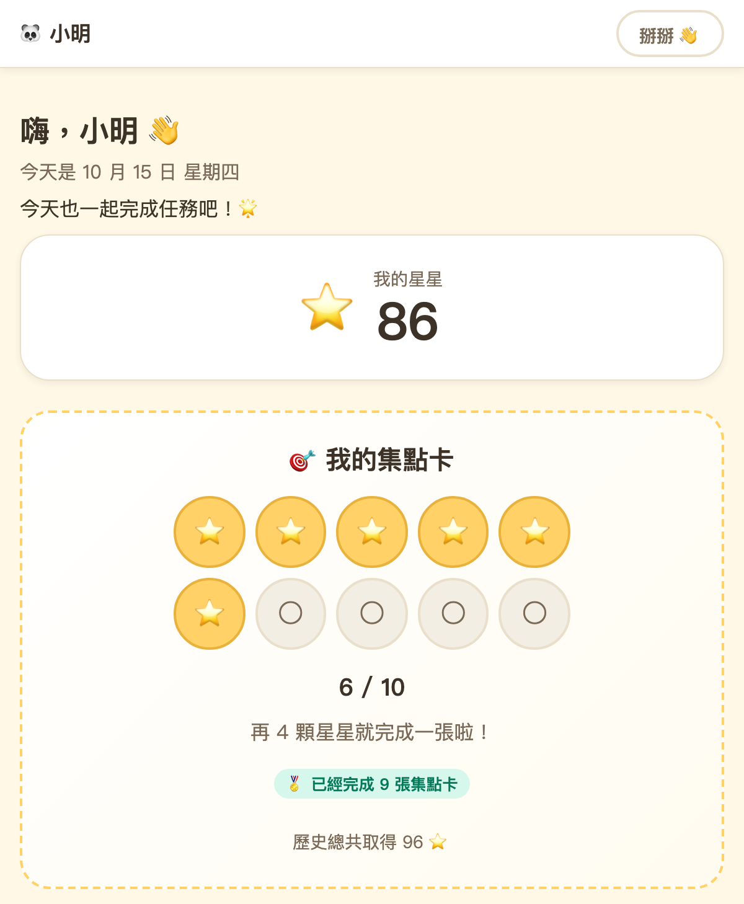
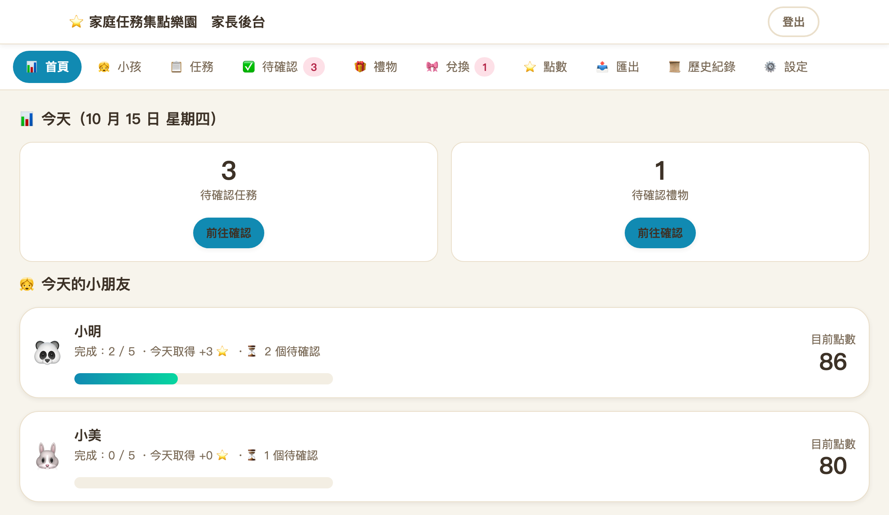
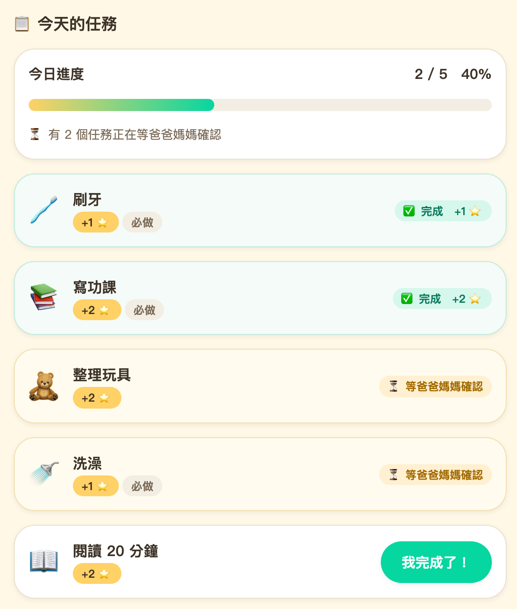
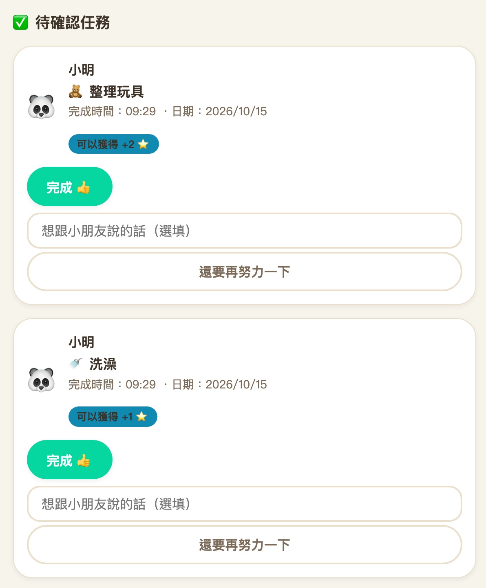
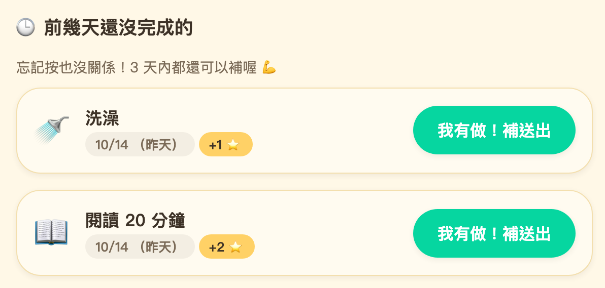
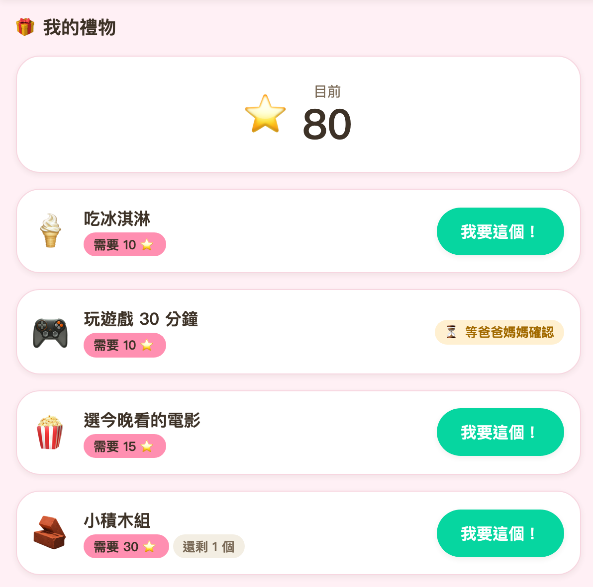
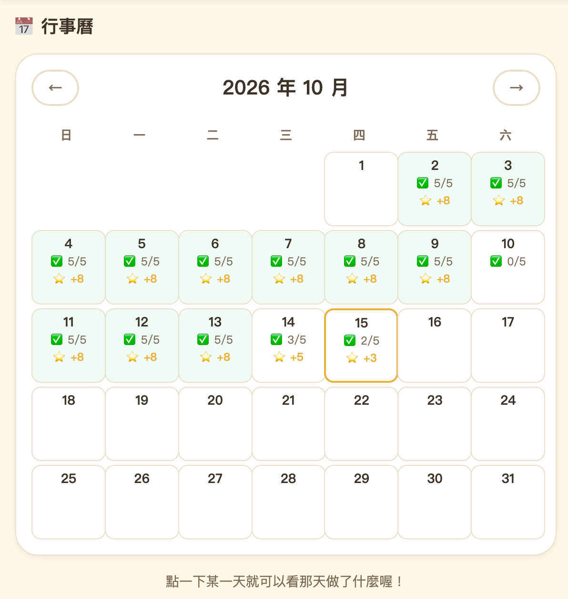
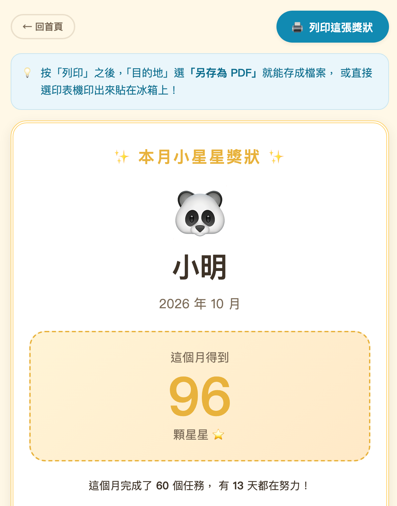
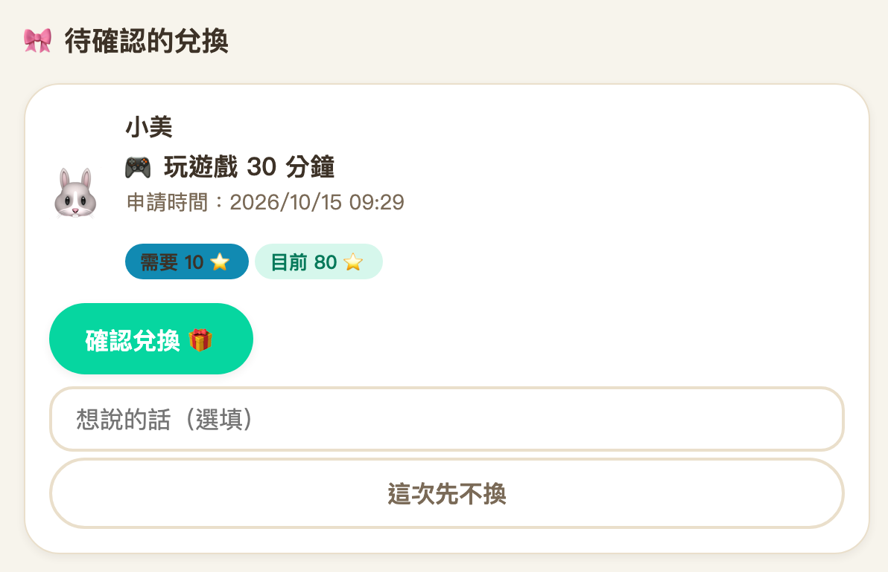
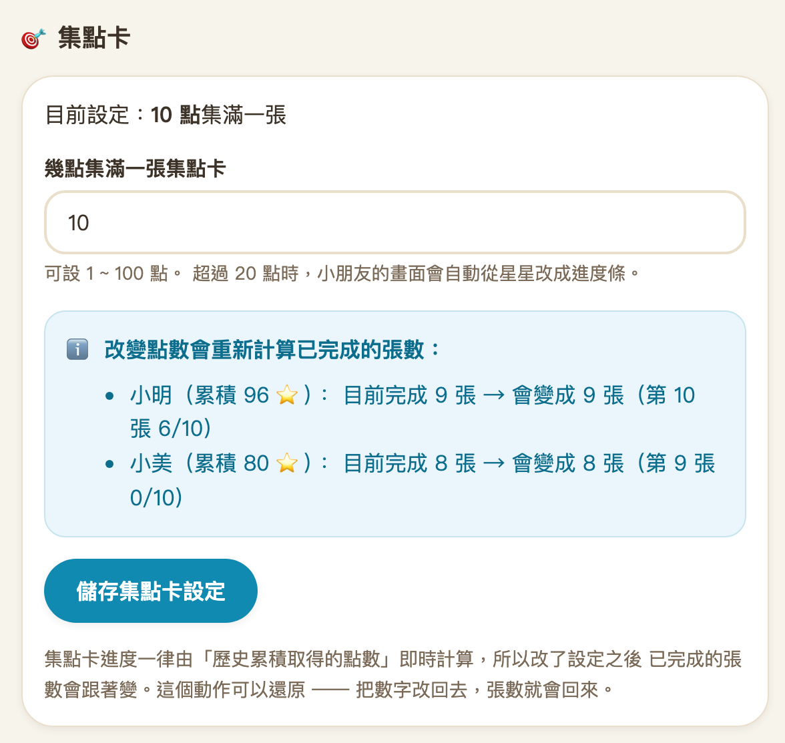

01 · 集點卡小孩自己登入，看得到星星與集點卡
小孩不用記帳號密碼：首頁選自己的頭像，再輸入 4 位數字 PIN 就進來了。「今天」頁最上面是目前有幾顆星星，下面是集點卡。
- 預設 10 顆星星集滿一張，家長可以在後台改成 1 ~ 100
- 集點卡依「歷史累積取得的星星」計算，換禮物之後，已完成的集點卡不會倒退
- 超過 20 點一張時，星星會自動換成進度條

網頁服務 · Windows 自架 · Python · Flask · SQLite
給家裡用的兒童任務集點與獎勵系統。
家長安排每天要做的事，小孩完成後送出申請，家長確認後才拿到星星；星星累積起來可以兌換禮物。用瀏覽器開，手機、平板、桌機都可以。核心不是監督或懲罰，而是鼓勵、習慣、參與、成就感，所以介面上不會出現「你今天沒有完成」「你失敗了」這類文案。
自架需求：Windows 10／11、Python 3.10 以上（建議 3.12+）；不需要 Node.js、Docker 或資料庫伺服器

// 功能
小孩這邊有今天的任務、集點卡、行事曆、禮物兌換、點數紀錄與成就徽章；家長這邊建立小孩／任務／禮物、審核任務與兌換、手動調整點數，也能看稽核紀錄與備份。
小孩不用記帳號密碼：首頁選自己的頭像，再輸入 4 位數字 PIN 就進來了。「今天」頁最上面是目前有幾顆星星，下面是集點卡。

任務由家長建立，可以設定「每天」「每週一次」「自訂星期」或「只做一次」，並指定給哪幾個小孩。小孩打開「今天」就看到今天的清單與進度。

小孩送出的任務都集中在後台的「待確認」。按「完成」就加上星星、送出慶祝通知；按「還要再努力一下」可以附一句話退回，退回不會產生任何點數，小孩可以再送一次。

小孩常常當天忘記按。首頁會列出「前幾天還沒完成的」任務，標明是哪一天；行事曆點進那一天也可以直接補按。

禮物由家長建立，設定需要幾顆星星，也可以限制數量。小孩按「我要這個！」只是提出申請，此時不扣星星；家長確認的那一刻才重新計算餘額與庫存，再扣點。

每一天顯示完成幾個任務、拿到幾顆星星；點一下某一天就看得到那天的明細。

小孩在「我的紀錄 → 我的獎狀」、家長在「匯出」都能打開。按 Ctrl+P，目的地選「另存為 PDF」就能存檔，或直接印出來；手機也可以。

// 點數規則
每一筆加點、扣點都是一筆紀錄，不能重複、不能憑空消失、不能偷偷改歷史，而且一定有來源與原因。目前的星星永遠由這些紀錄即時算出來。
系統分開兩個數字：目前餘額拿來換禮物，換了就會減少；歷史累積拿來算集點卡，換禮物不會減少。所以不會發生「換了一個禮物，已完成的集點卡就倒退」——那感覺就像努力被拿走了。
任務或禮物之後改名，過去的紀錄仍然顯示當時的名稱。
兌換時，家長按「確認兌換」的那一刻會在同一個交易裡重新檢查餘額與庫存，不相信畫面上的舊數字；點數不足就拒絕，餘額不會變成負的（預設不允許負數，可由設定調整）。

// 資料保管
backup.bat，或在後台按「立即備份」。使用 SQLite 官方的 Backup API，系統使用中也能取得一致的快照。超過 7 天沒備份，後台會提醒（天數可設定）。restore.bat：系統還在執行就拒絕、列出備份讓你選、要求輸入 yes 確認，並且先把目前的資料庫備份成 pre-restore-* 才覆蓋。// 自架
需求：Windows 10／11、Python 3.10 以上（建議 3.12+；安裝時勾選 Add Python to PATH）、約 200 MB 磁碟空間。把專案放到固定位置（例如 C:\family-reward\），先在該目錄執行下面兩行：複製出 .env，並產生一段隨機金鑰。
copy .env.example .env python -c "import secrets; print(secrets.token_urlsafe(48))"
.env，至少改掉 FLASK_SECRET_KEY（填上一行指令產生的隨機字串）與 ADMIN_INITIAL_PASSWORD（你要用的初始管理員密碼）。這一步一定要在第一次執行 start.bat 之前做：ADMIN_INITIAL_PASSWORD 只在第一次建立帳號時生效，帳號建立之後改它不會套用到既有帳號。.env 含密碼，已加入 .gitignore，禁止提交 Git。.venv、安裝套件、建立資料庫與管理員帳號，再以 Waitress 啟動網站，需要幾分鐘。之後開 http://127.0.0.1:8080（port 可在 config\config.yaml 改）。run\web.pid 的行程，不會誤殺其他 Python 程式。想開機自動啟動，把 start.bat 的捷徑放進 shell:startup。cloudflare-setup.bat 檢查狀態（只檢查，不改 Cloudflare 設定）。Tunnel 啟動失敗時，本機服務照常運作。admin，密碼是 .env 的初始密碼；登入後會一直提醒你改密碼，直到改掉為止。security.child_pin_length 設定）、任務與禮物。PIN 以 Hash 儲存，忘記只能由家長重設。
儲存前會先列出每個小孩的張數會怎麼變；超過 20 點時，小朋友畫面上的星星會自動換成進度條。改回原本的數字，張數就會回來。
// 已知限制
ui.sound_enabled 預設 false，第一版沒有實作音效播放。achievement_service.py 補判斷規則。start.bat 已預留 runtime\python.exe 的優先偵測邏輯，但沒有實際打包免安裝的 Python runtime。backup.bat 或從後台按「立即備份」；超過設定天數會提醒，但不會自動備份。想自動化可以用 Windows 工作排程器定時執行 backup.bat。